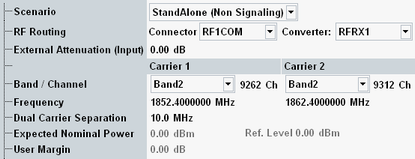

The following parameters configure the RF input path.
All parameters are common measurement settings, i.e. they have the same value in all WCDMA measurements (multi-evaluation measurement, TPC measurement and PRACH measurement).
See also: "Connection Control (Measurements)"

The measurements are used in non signaling mode.
Remote command:Allows you to use a WCDMA signaling application (option R&S CMW-KS400) in parallel to the WCDMA measurements. The signaling application is selected by the additional parameter "Controlled by".
The parameters described in this section display values determined by the signaling application. The corresponding measurement settings are remembered in the background and displayed again when switching back to the standalone scenario. The same applies to some other parameters (see parameter descriptions).
The additional parameter "UL Target Power" is a signaling parameter added to the measurement dialog for fast access.
Connection status information of the signaling application is displayed at the bottom of the measurement views. Softkeys and hotkeys provide access to the settings of the signaling application and allow you to switch the downlink signal on or off, see "Additional Softkeys and Hotkeys".
- Multi-evaluation measurement: "Parallel Signaling and Measurement"
- TPC measurement: "Parallel Signaling and Measurement"
- PRACH measurement: "Parallel Signaling and Measurement"
- WCDMA DPCCH open loop power measurement: "Parallel Signaling and Measurement"
- WCDMA out-of-sync handling measurement: "Parallel Signaling and Measurement"
Allows you to use a WCDMA protocol test application in parallel to the WCDMA measurements. The protocol test application is selected by the additional parameter "Controlled by".
The signal routing and analyzer settings described in this section are ignored. For the other settings, you must configure values compatible with the settings of the protocol test application.
Remote command:Selects the input path for the measured RF signal, i.e. the input connector and the RX module to be used.
In the standalone (SA) scenario, these parameters are controlled by the measurement. In the combined signal path (CSP) scenario, they are controlled by the signaling application.
For connector and converter settings in the combined signal path scenario, use one of the ROUTe:WCDMa:SIGN<i>:SCENario:... signaling commands.
Remote command:ROUTe:WCDMa:SIGN<i>:SCENario:... (CSP)
Defines the value of an external attenuation (or gain, if the value is negative) in the input path. The power readings of the R&S CMW are corrected by the external attenuation value.
The external attenuation value is also used in the calculation of the maximum input power that the R&S CMW can measure.
If a correction table for frequency-dependent attenuation is active for the chosen connector, then the table name and a button are displayed. Press the button to display the table entries.
In the standalone (SA) scenario, this parameter is controlled by the measurement. In the combined signal path (CSP) scenario, it is controlled by the signaling application.
Center frequency of the RF analyzer. Set this frequency to the frequency of the measured RF signal to obtain a meaningful measurement result. The relation between operating band, frequency and channel number is defined by 3GPP (see "Operating Bands").
- Enter the frequency directly. The band and channel settings can be ignored or used for validation of the entered frequency. For validation, select the designated band. The channel number resulting from the selected band and frequency is displayed. For an invalid combination, no channel number is displayed.
- Select a band and enter a channel number valid for this band. The R&S CMW calculates the resulting frequency.
In the standalone (SA) scenario, these parameters are controlled by the measurement. In the combined signal path (CSP) scenario, they are controlled by the signaling application.
In the dual carrier measurements, the center uplink frequency of carrier 2 equals the center frequency of carrier 1 plus carrier separation value. Exception: at the upper end of an operating band, carrier 2 uses the center frequency of carrier 1 minus carrier separation value. If you configure one uplink channel, the other uplink channel is configured automatically.
Use the value of 5 MHz for adjacent channels.
In the standalone (SA) scenario, this parameter is controlled by the measurement. In the combined signal path (CSP) scenario, it is controlled by the signaling application.
Defines the nominal power of the RF signal to be measured.
- Multi-evaluation measurement: peak output power at the DUT expected during the measurement interval
- TPC measurement: peak output power at the DUT expected during the measurement. Even if you start the measurement with minimum UE power, consider the maximum power expected at a later stage of the measurement.
- PRACH measurement: peak output power at the DUT expected for the first preamble. For subsequent preambles the expected power is calculated automatically from this value and a power step limit setting, see also "Power Step Limits".
- DPCCH open loop power measurement: peak output power as a sum of both carriers plus tolerance of ∼13 dB.
- Out-of-sync handling measurement requires high dynamics: from maximum to minimum output power of UE and vice versa. For the measurement, expected nominal power is set automatically with respect these level transitions. The manual setting of expected nominal power is ignored. Therefore for the measurements aligned to specification, the exact UE level cannot be exactly determined in the intervals A to C and E to F.
While the combined signal path scenario is active, this parameter is controlled by the signaling application. Configure the signaling application, so that it calculates the expected nominal power from the UL power control settings (expected nominal power mode = "According to UL Power Control Settings"). Do not use the manual mode.
The Ref. level is calculated as follows: Reference Level = Expected Nominal Power + User Margin
The actual input power at the connectors is calculated as the reference level minus the external attenuation (input). If all power settings are configured correctly the value must be within the level range of the selected RF input connector, refer to the data sheet.
In the standalone (SA) scenario, this parameter is controlled by the measurement. In the combined signal path (CSP) scenario, it is controlled by the signaling application.
Margin that the R&S CMW adds to the "Expected Nominal Power" to determine its reference power ("Ref. Level"). The "User Margin" is typically used to account for the known variations of the RF input signal power, e.g. the variations due to a specific channel configuration.
The appropriate values depend on the configuration of the UL WCDMA signal, e.g. on the active channels and gain factors. For a 12.2 kbps reference measurement channel (RMC), a value of 5 dB is appropriate.
In the standalone (SA) scenario, this parameter is controlled by the measurement. In the combined signal path (CSP) scenario, it is controlled by the signaling application.
"UL Target Power" is a signaling parameter added to the measurement dialog for fast access.
This parameter is available in the combined signal path (CSP) scenario only. It is controlled by the signaling application.
Remote command: